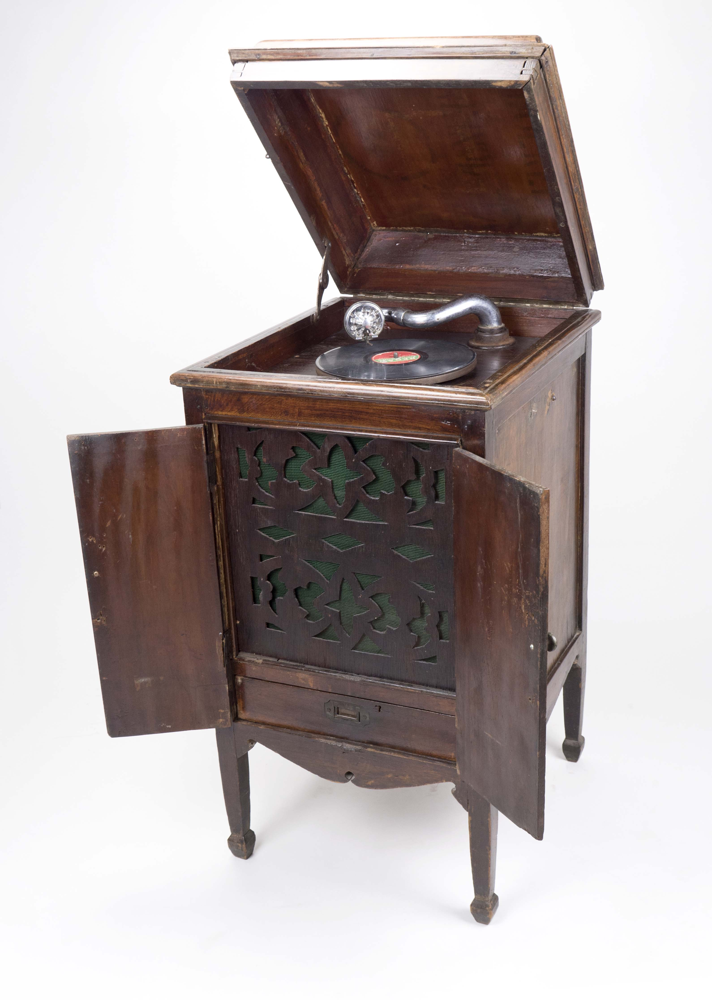

พิพิธภัณฑ์เทคโนโลยีสารสนเทศ
องค์การพิพิธภัณฑ์วิทยาศาสตร์แห่งชาติ

ลูกคิดจีน
0%
ผลิตขึ้นในช่วง 3000 ปีก่อน โดยชาวจีน ใช้คำนวณ บวก ลบ คูณ หาร เลขจำนวนเต็ม โดยองค์การการศึกษา วิทยาศาสตร์ และวัฒนธรรมแห่งสหประชาชาติ หรือยูเนสโก ได้ประกาศให้ “ลูกคิดจีน” เป็นมรดกภูมิปัญญาทางวัฒนธรรมของโลกในปี ค.ศ. 2008
ผู้บริจาค คุณณัฐนนท์ อัครภานุวิทยา
ปีที่ได้รับบริจาค พ.ศ. 2553
ปีที่ได้รับบริจาค พ.ศ. 2553
สายอากาศไดโพล
ถูกสร้างขึ้นเป็นครั้งแรกในปี ค.ศ. 1888 โดย Heinrich Hertz ชาวเยอรมัน ได้ทดลองเพื่อพิสูจน์ว่าคลื่นแม่เหล็กไฟฟ้ามีอยู่จริง โดยวางสายอากาศแบบไดโพลหลายตัวไว้ที่จุดโฟกัสของกลุ่มแผงสะท้อนคลื่นแบบโค้งเพื่อให้มีการทำงานทั้งรับและส่ง ปรากฏว่า สามารถรับสัญญาณได้
ผู้บริจาค คุณณรงค์ศักดิ์ สุขอร่าม
ปีที่ได้รับบริจาค พ.ศ. 2559
ปีที่ได้รับบริจาค พ.ศ. 2559
กล้องถ่ายรูป Canon FTb QL
0%
กล้องถ่ายรูปประเภทสะท้อนภาพเลนส์เดี่ยว ยี่ห้อ Canon รุ่น FTb QL พร้อมเลนส์ Canon FD f2.0 ขนาด 35 mm. ผลิตในประเทศญี่ปุ่น เปิดตัวครั้งแรกในปี ค.ศ. 1971 โดย "QL" ย่อมาจาก Quick Load มีระบบโหลดฟิล์มอัตโนมัติ ทำให้การถ่ายภาพสะดวกรวดเร็วขึ้น
ผู้บริจาค คุณธนพร อินศิริ
ปีที่ได้รับบริจาค พ.ศ. 2557
ปีที่ได้รับบริจาค พ.ศ. 2557
เครื่องคำนวณ Todd Protectograph
เครื่องคำนวณ Todd Protectograph Model 60 เป็นเครื่องคำนวณแบบฟันเฟือง
ผลิตโดยบริษัท Todd Company ประเทศสหรัฐอเมริกา
ผู้บริจาค ศูนย์วิทยาศาสตร์เพื่อการศึกษา
ปีที่ได้รับบริจาค พ.ศ. 2552
ปีที่ได้รับบริจาค พ.ศ. 2552
วิทยุธานินทร์ TF-2111
วิทยุทรานซิสเตอร์ สัญชาติไทย ที่ออกแบบมาให้สามารถรับวิทยุ AM และ FM ได้ชัดเจน ระบบ STEREO มี ลำโพง 3 ตัว
ผู้บริจาค คุณบุญหลาย ศรีบุญเรือง
ปีที่ได้รับบริจาค พ.ศ. 2560
ปีที่ได้รับบริจาค พ.ศ. 2560
โทรทัศน์ ขาว-ดำ Metz
เครื่องรับโทรทัศน์ขาว-ดำ ยี่ห้อ Metz รุ่น 866 ผลิตในประเทศเยอรมัน โดยบริษัท Metz Consumer Electronics ซึ่งก่อนที่จะผลิตโทรทัศน์ บริษัท Metz ผลิตเครื่องรับวิทยุมาก่อน และในปัจจุบันยังมีผลิตภัณฑ์ที่เป็นโทรทัศน์รุ่นใหม่ด้วย
ผู้บริจาค คุณณรงค์ศักดิ์ สุขอร่าม
ปีที่ได้รับบริจาค พ.ศ. 2559
ปีที่ได้รับบริจาค พ.ศ. 2559
เครื่องพิมพ์ดีด Hermes Baby
0%
บริษัท Hermes เป็นบริษัทผลิตเครื่องพิมพ์ดีดในประเทศสวิสเซอร์แลนด์ นิยมทำตัวเครื่องเป็นสีเขียวแทบทุกรุ่น โดย Hermes Baby เป็นรุ่นที่ถูกผลิตในช่วงปี ค.ศ. 1940 - 1954
ปีที่ได้รับบริจาค พ.ศ. 2555
เครื่องเล่นแผ่นเสียงครั่ง
- 
Emile Berliner ชาวเยอรมัน เป็นเจ้าของสิทธิบัตรเครื่องเล่นแผ่นเสียงหรือจานเสียงแบบโบราณ เมื่อปี ค.ศ. 1887 พร้อมกับแผ่นเสียงครั่งซึ่งเป็นเทคโนโลยีบันทึกเสียงชนิดใหม่ในยุคนั้น สามารถเล่นเพลงที่บันทึกในแผ่นโดยไขลานและวางเข็มบนจานแผ่นเสียง
ผู้บริจาค คุณณรงค์ศักดิ์ สุขอร่าม
ปีที่ได้รับบริจาค พ.ศ. 2559
ปีที่ได้รับบริจาค พ.ศ. 2559
แผ่นเสียงไวนิล

บริษัทแผ่นเสียงโคลัมเบีย ประเทศสหรัฐอเมริกา ได้พัฒนาแผ่นบันทึกเสียงลองเพลย์ หรือ แผ่นเสียงไวนิล (Vinyl) ขึ้น ในปี ค.ศ. 1948 มีขนาดบางเบา ตกไม่แตก คุณภาพเสียงทุ้ม นุ่มนวล มีเส้นผ่านศูนย์กลางขนาด 12 นิ้ว บันทึกเสียงได้ด้านละ 20 นาที
ผู้บริจาค คุณณรงค์ศักดิ์ สุขอร่าม
ปีที่ได้รับบริจาค พ.ศ. 2559
ปีที่ได้รับบริจาค พ.ศ. 2559
โทรศัพท์อีริคสัน DBH 1001
0%
โทรศัพท์อีริคสัน รุ่น DBH 1001 ผลิตจำหน่ายเมื่อปี ค.ศ.1931 เป็น โครงการความร่วมมือระหว่าง LM Ericsson และ Televerket (สวีเดน) ออกแบบโดย Christian Bjerknes และ Jean Heiberg เป็นครั้งแรกที่ใช้วัสดุตัวครอบโทรศัพท์เป็นฉนวนพลาสติก (Bakelite) ซึ่งมีความเหนียวและไม่นำไฟฟ้า ซึ่งเป็นนิยมและทันสมัยมากในขณะนั้น
ปีที่ได้รับบริจาค พ.ศ. 2553